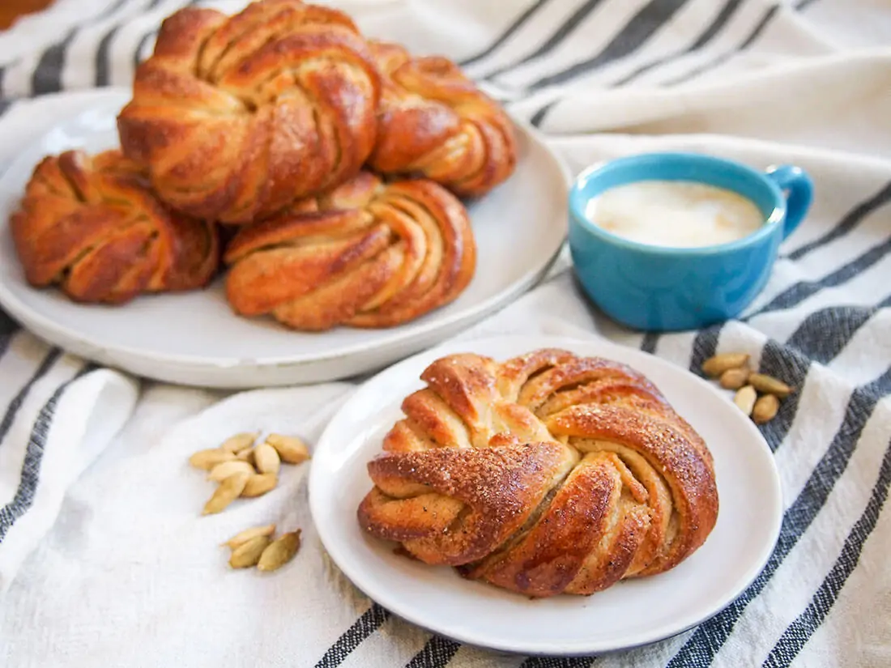

Swedish Cardamom Buns

Description
These sweet buns are perfect with your morning coffee with their warm cardamom flavor and delectable sugar crunch on top.
Ingredients:
For the dough:
- 1/2 cup milk
- 1 teaspoon fast acting yeast
- 2 tablespoon unsalted butter
- 2 tablespoon light brown sugar
- 1/2 teaspoon ground cardamom
- 1 1/2 cups all purpose flour
- 1/8 teaspoon salt
For the filling:
- 3 tablespoon unsalted butter
- 3 tablespoon light brown sugar
- 1 teaspoon ground cardamom
To top:
- 1 egg
- 1 teaspoon cane sugar
Directions:
Forming dough & first rise (40 mins)
- Warm the milk gently until it just starts to bubble then remove from the heat and set aside to cool slightly.
Once it's tepid, sprinkle the yeast over the top and set aside while you prepare out other ingredients.
- Mix together the softened butter, sugar, and cardamom. Add the salt to the flour. Mix the butter mixture
into the yeast and milk mixture, then gradually add the flour. Once combined, turn it out onto a lightly floured
surface and knead for around 5 minutes. Note, you can also do the mixing and kneading in a stand mixer.
- Put the dough into a clean, lightly-oiled bowl and cover. Set aside in a warm place for around 40 minutes to double in size.
Mixing, filling, and forming buns
- When the dough is almost done with its first rise, mix together the butter, sugar, and cardamom for the filling.
- Roll the dough out into a long, thin rectangle, approx. 21 in x 7 in (52x18cm). Spread the folling evenly over the
top then fold the dough to be three layers thick - first fold one third (short end) over to halfway across the rest of
the dough, then fold the other side over the top. The layered piece of dough will be roughly square.
- Cut the dough into 6 even strips crosswise (so they are joined on either side), trimming slightly on either end
if needed. Then, split each strip in the middle almost all the way but leaving the one side joined.
- Take one piece of dough and twist the two strips together, then tuck one end in between where they join, and loop
the other end over and through the middle of the loop you have formed. Repeat with the other pieces of dough.
Second rise (30 mins) then baking
- Put the formed buns on a baking sheet lined with a silicone mat or parchment, cover and set aside to prove for around 30 mins.
Meanwhile, preheat the oven to 425F/220C.
- Lightly brush each bun with egg-wash, sprinkle over a little sugar then bake for approx 12 mins until golden brown on top.
Allow to cool for a few minutes before serving (best served warm).